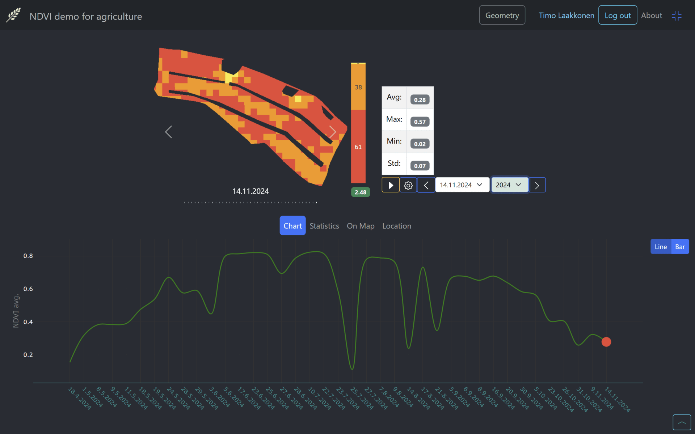

Selecting the date of NDVI-image of the specifig area of interest

Selecting the year
From dropdown

Selecting the date
Selecting the date of NDVI image and statistics date of specifig area can be done various ways.
Step by step by swapping right/left in image area
Swapping/clicking/tapping to left/right or left/right arrow-buttons in image area. Also with the arrow buttons around the date and year drop-down menus.
From dropdown

From filmroll
On bottom right there is a button which will open film view, where all the images are shown as a film images. You can select the image to be showm of the specifig date.

From statistics view
From bar chart